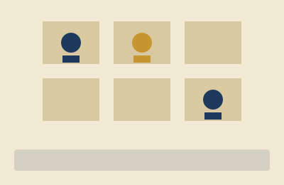
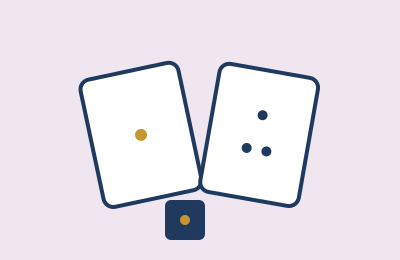

Estratégia
Jogos em que cada decisão conta, como xadrez, Azul e Coimbra. Dicas para planejar as jogadas com antecedência.
Mesa Posta
Blog de jogos de tabuleiro
A Mesa Posta é um blog dedicado a jogos de tabuleiro para todas as idades. Aqui você encontra resenhas, dicas de estratégia, sugestões para jogar em grupo e recomendações para montar sua coleção, sempre com linguagem simples e sem spoilers.
Publicamos uma vez por semana. Escolha uma das categorias no menu ou veja os destaques abaixo.

Jogos em que cada decisão conta, como xadrez, Azul e Coimbra. Dicas para planejar as jogadas com antecedência.
Jogos em que todos vencem ou perdem juntos. Ótimos para equipes e para quem não gosta de competição direta.

Jogos que atravessaram gerações, com regras simples e partidas que nunca perdem a graça.